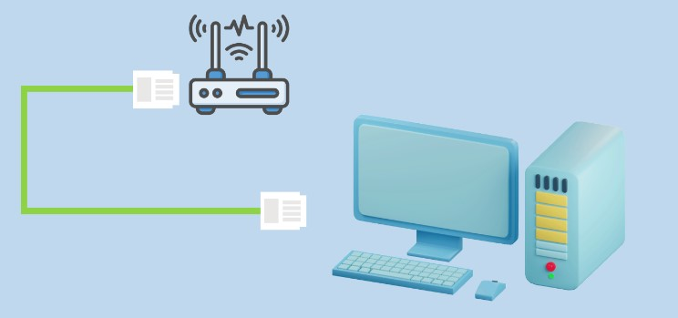
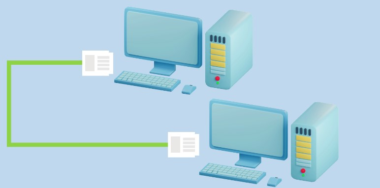

lan cabling
what is lan cable
LAN cable is cable that connects to computers, network switches and then from the switch to a router, modem or dsl which powers your internet from a internet service provider.
straight through lan cable
A straight-through cable is a type of twisted pair cable that is used in local area networks to connect a computer to a network hub such as a router

The figure above presents an example of a connection using a straight through LAN cable between computer and a router or hub.
cross over lan cable
These are used to connect two computers or similar devices directly together, such as computers or hubs.

The figure above presents an example of a connection using a crossover LAN cable between two similar devices such as computers.